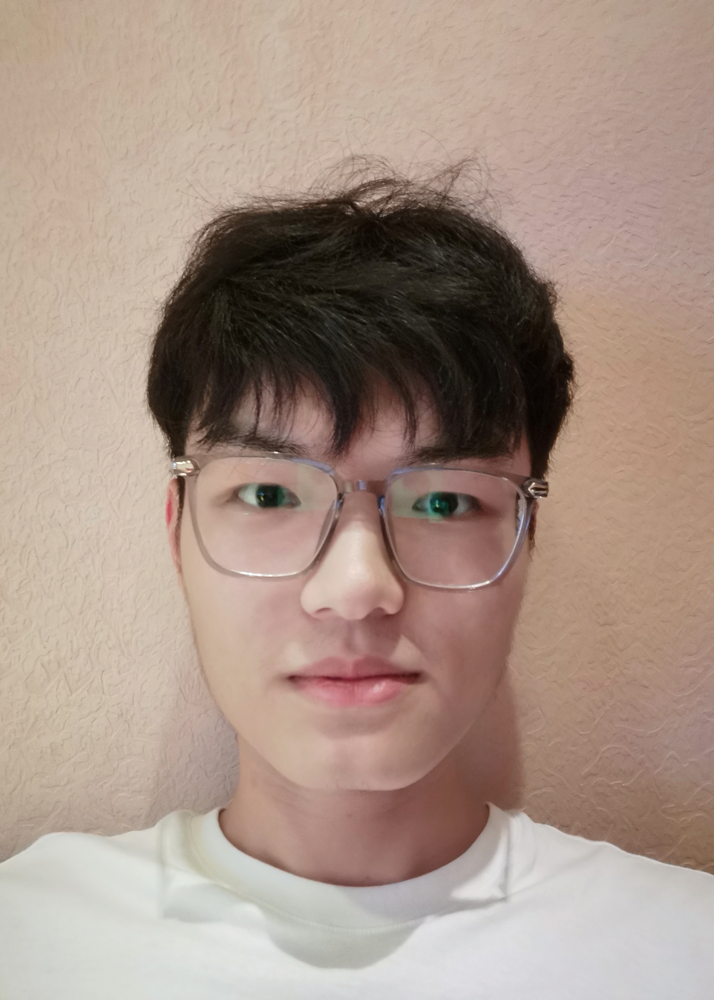

|
Hao Ke
I am a graduate student in Information and Communication Engineering at Beijing Jiaotong University (BJTU). I conduct research at MePro (led by Prof. Yao Zhao), jointly supervised by Prof. Shikui Wei and Prof. Yakun Chang.
I have completed an algorithm internship at Xiaomi (Jan. 2026 - Sept. 2026), focusing on 3D geometric perception with vision-language models.
Prior to that, I received my undergraduate degree at Communications Engineering from CTGU.
Email /
CV /
Scholar /
Github
|

|
Research
I'm interested in computer vision, particularly 3D geometric perception, reconstruction, and vision-language models (VLMs). Most of my research is about understanding and reconstructing the physical world (shape, motion, light, etc) from images, usually with radiance fields and gaussian splatting.
|
|
|
Glass-Casing-Free 3D Reconstruction
Hao Ke, Bo Li, Yakun Chang, Cheng Cheng, Hong Li, Yao Zhao, Shikui Wei,
IEEE Transactions on Multimedia, 2026
project page
/
code
A high-quality 3D reconstruction method for objects enclosed in transparent glass casings without requiring casing geometry or manual removal.
|
|
|
Consistent 3D Gaussian Scene Update via Voxel-Based Localization
Hao Ke,
(Under Review), 2026
project page
/
code
An efficient 3D scene update paradigm based on voxel selection. It achieves rapid and accurate region localization and scene update through voxel voting and semantic segmentation.
|
|